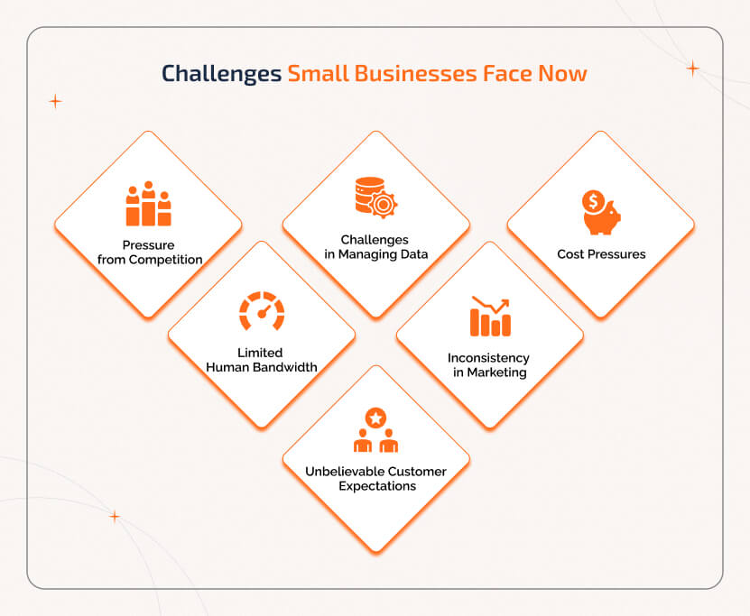
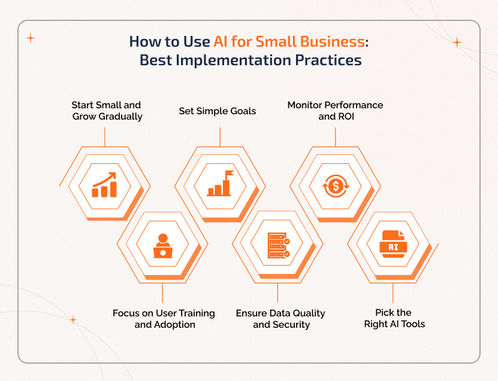

How entrepreneurs run their businesses has evolved at rocket speed in the last few years. This is because of the evolving customer expectations that change almost every week. They are never satisfied; they need personalization, speedy response, and 24/7 service, all at the same time.
Meanwhile, operational costs are rising by the day, all thanks to increasing competition, difficulty in retaining skilled employees, and low barriers to entry. While big companies deal with this by pouring money into automation and advanced technology, it is the small businesses that face an unfair disadvantage. They end up wearing multiple hats and working 60+ hour weeks to maintain the pace.
AI solutions for business are shifting this majorly. They are not a premium technology for billion-dollar enterprises anymore. With a little thought, today, even small teams can use AI to work smarter, respond faster, and simply grow without adding more people.
In fact, a 2023 Microsoft survey found that over 60% of SMBs already use AI tools for marketing, customer service, and data visualization. And those who are adopting early? They are saving time, cutting costs, and staying more agile.
B2B and B2C companies, especially those in SaaS, eCommerce, healthcare, and fintech industries, are now realizing the humongous benefits of bringing AI into their organizations. If you are one of them, know that your competitors are already exploring artificial intelligence small business opportunities. And the window for early adoption is already closing rapidly.
So, your question shouldn’t be if you should use AI, but how fast you must.
What is AI for Small Businesses?
AI for small businesses are affordable artificial intelligence tools that are developed for companies with limited budgets and technical experts. These smart solutions do not need millions of dollars to develop or huge IT departments to manage.
You often see them in various guises, like chatbots that handling customer questions, accounting software automating bookkeeping, loan management systems streamlining the lending lifecycle, and marketing bots running campaigns.
Best AI for small businesses typically offers:
- Plug-and-play functionality with minimal setup
- Subscription-based pricing models that scale over time
- User-friendly interfaces that run without technical knowledge
- Integration capabilities with existing software systems
- Cloud-based solutions that completely cut down infrastructure costs
The beauty of AI solutions for business owners lies in their simplicity and accessibility; you don’t have to understand complex algorithms or hire data scientists.
Challenges Small Businesses Face Now
Small businesses across the world, regardless of industry or region, face a strikingly similar set of challenges, many of which AI can solve. Here’s how:

1. Limited Human Bandwidth
Most small business owners wear many hats, including those of a founder, marketer, HR manager, accountant, and customer support, all rolled into one. Such multitasking can burn them out quickly and leave them little time for planning growth. In fact, according to a 2022 Zapier survey, more than 80% of SMB employees confirmed spending at least 5 hours per week on routine tasks.
Here’s an example use case to show how AI solutions in business change this: A bakery owner using an AI CRM for small business e-commerce can automate inventory alerts, order confirmations, and even analyze the emotions behind customer responses to flag unhappy customers.
2. Challenges in Managing Data
Even small businesses now generate huge amounts of data from website clicks, social media engagement, purchase history, and customer payment information. But without expensive data teams or customized dashboards, they struggle to translate this into action.
AI-based example case: A small online clothing brand using a cloud-based data analytics platform like Google Looker Studio can automatically generate visual reports on best-selling items, customer trends, and seasonal demand without needing any tech expert or outsourcing partner.
3. Pressure from Competition
With a good IT budget and access to top-tier talent, large corporations have the upper hand when it comes to leveraging cutting-edge technologies. Small businesses may have better ideas but not the same resources to execute them. This creates immense pressure to “do more with less.”
AI-based example case: While a global coffee chain may use AI to manage inventory across 1,000 outlets, a single-location café can use POS-integrated tools to predict daily stock needs, reduce wastage, and optimize labor. This way, they can focus on improving their core and make them better than the global coffee chain.
4. Inconsistency in Marketing
Digital marketing is not easy; we have understood this now. It must have consistency, creativity, and technical skill across all platforms, such as SEO, social media, email, and paid ads. Yet, 71% of small businesses have no dedicated marketing staff for customer acquisition, according to Mailchimp. And therefore, such businesses end up with irregular posts, missed ad opportunities, and poorly tracked campaigns.
AI-based example case: A modular kitchen studio using generative AI models for captions can auto-generate stunning social media posts and weekly newsletters, while AI marketing tools for small businesses can help launch optimized ad creatives with performance analytics at a fraction of the original performance marketing cost.
5. Unbelievable Customer Expectations
Customer expectations are not only increasing, but they are also not giving us enough time to adapt. Customers are switching service providers too quickly if things are not delivered instantly. According to a Sprout Social report, 73% of customers expect responses in under an hour from businesses of all sizes.
AI-based example case: A local travel agency using an AI answering service for small businesses can instantly respond to questions, offer itinerary suggestions, modify suggestions based on customers’ personal choices, and even take bookings after business is closed.
6. Cost Pressures
Hiring specialists for each stand-alone function, like marketing, accounting, or HR, is turning expensive day by day. At the same time, profit margins are shrinking due to inefficient operations, pricing issues, and increased utility costs. McKinsey's latest report found that 33% of businesses use generative AI to cut costs, a trend small businesses cannot afford to ignore.
AI-based example case: A small private lending firm using an AI-led loan origination system can evaluate customers’ creditworthiness by scanning transactions in real-time, suggest loan products, draft contracts, and automate loan delinquency, bringing down billable time from weeks to hours.
Our AI tools cut down costs, save time, and compete better – without hiring extra hands.
Why Should You Shift Your Focus: How AI Can Help Small Businesses?
Using AI for small business marketing, customer support, and innovation is necessary now for long-term survival. The following table explains clearly why the shift matters now more than ever:
| What’s the AI Advantage? | What It Means for You | What You Actually Get |
|---|---|---|
| Productivity goes up almost instantly | AI takes over boring, repetitive tasks so that your team can focus on actual work that needs brains. | Up to 40% more efficiency and 30% lower operational costs with real, visible impact. |
| Cuts down your working capital | When you are running on tight margins, every rupee counts. AI solutions for business help with this by reducing manual errors, automating monotonous yet important tasks, and using time better. | Less wastage and smarter resource use. Predictive analytics tools can cut breakdowns by 70%. |
| Grow without hiring for months | Scaling a business up usually means hiring more people, obviously. With AI, you don’t need to. You can take on more customers without doubling your team. | Get more output with the same team. Keep staff happy and productive, and grow while doing so. |
| Work even when you are offline | AI doesn’t take breaks. Whether it’s an AI receptionist for small business or a chatbot, your systems keep running even when you aren’t around. | Deliver 24/7 support, miss zero leads, and keep customers happier, all happening simultaneously. |
| Make data-driven decisions | Stop second-guessing your decisions henceforth. With AI’s accurate trends, patterns, and predictions, make your decisions not on instincts but based on data. | Gain more clarity, less risk. Make better choices in products, services, patterns, and even budget allocation. |
| Do more with your existing marketing | AI can write emails, plan posts, and target your ads and even change them if they aren’t working, all without needing a full-time marketer. | Save hours, improve engagement, and stretch your ad budget further without stretching it beyond your capabilities. |
| Reply faster, serve customers better | Customers hate waiting. With chatbots or AI agents, you don’t make them. This is especially useful in the healthcare and legal sectors, where every minute counts for people. | Instant responses, customized replies, better customer understanding, and no need for hiring a big support team. |
| No more accounting problems | AI bookkeeping for small businesses means no more late nights staring at mismatched invoices or changing RBI rules. | From detecting red flags to managing compliance, you do everything in real time with 98% accuracy. |
AI Solutions for Business Owners Across Industries
Now that you know the long-term benefits of AI, let’s see how AI for small business owners is already being used, by task, role, and tool. These are real, revenue-saving, time-saving solutions that both B2B and B2C companies should explore:
1. Financial Management
Using AI accounting software for small businesses, you can change your financial management cycle from a time-consuming chore into an automated process. Handling invoices and account receivables, tracking expenses, preparing taxes, and reporting and analytics, every aspect of accounting and bookkeeping can be automated affordably.
- Automate categorizing and tracking expenses in real-time
- Generate real-time financial reports and cash flow analysis
- Foresee consequences and plan budget through predictive analytics
- Integrate with credit bureau reports, bank accounts, and credit cards
- Automate tax calculations and ensure regulatory compliance
It doesn’t stop here. With AI bookkeeping for small business solutions, small accounting firms can reduce manual data entry by up to 80% by automatically categorizing transactions, reconciling accounts, and generating financial statements within minutes.
2. Marketing, and Customer Acquisition and Retention
A small business using AI for marketing can accomplish more than they think by automating 90% of their digital marketing efforts, like social media management, email campaigns, content creation, and advertising optimization. You can use the tools to analyze customer behavior, predict preferences, and automate communications across different digital channels, like websites vs. YouTube vs. Facebook vs. LinkedIn.
- Generate content and schedule marketing ads on Google, Facebook, etc.
- Automate and personalize email marketing campaigns based on recipients
- Develop various SEO content and optimize them based on analytics
- Manage ad campaigns and allocate budget accurately
- Segment customers based on age, demography, and position at the company, and target them with unique offerings
With AI discoverability for small businesses, you can further improve branding and online visibility through review management, local SEO, and predictive analytics. These solutions can help you appear in relevant search results and attract qualified leads.
3. Customer Service and Communication
Since you can’t hire teams for 24/7 chats, calls, or administrative work, you bring in an AI virtual assistant for small businesses to handle simple to complex customer questions. Here’s a list of virtual agents:
1. AI receptionists for small businesses act as smart front-desk assistants that never take the day off. They can manage phone calls, schedule appointments, and provide basic information even when your store is closed and you are vacationing. They can even reroute urgent matters to the right human contact.
2. AI answering service for small business solutions could be one of the best investment strategies for small companies as they combine chatbot and receptionist capabilities into unified communication platforms. These smart AI tools can manage customer interactions across the web, WhatsApp, phone, and SMS; maintain relevance across conversations; and even track and update appointments, service status, and inquiries.
3. AI agents for small business are highly intelligent assistants that look beyond single-task automation. They can access customer history, personalize responses, assist with order tracking, and support internal teams by summarizing interactions, drafting replies, and providing better outcomes. AI agents continuously learn, adapt, and upgrade their algorithms from their own conversations and errors over time and offer contextual, end-to-end support that mimics human-like understanding, without the resource drain or major tech upgrade.
4. AI chatbot for small business solutions can handle customer inquiries in real-time, provide product information, schedule appointments, and answer FAQs. Advanced chatbots can process orders, handle returns, share personalized recommendations, schedule demos, place orders, initiate cancellations, and escalate complex issues to human agents when needed.
4. Sales and Customer Relationship Management
For small eCommerce businesses and online service providers, keeping a record of every lead, follow-up, and sales lead can be taxing. However, with an AI CRM for small business eCommerce, you can not only manage customer interactions in real-time but also learn from them. This way, you can be predicting buying patterns, qualifying leads, and automating the grunt work of sales in no time. You stay focused on closing deals, while the CRM handles the tracking and timing.
- Score and qualify leads based on behavior
- Send automated follow-up emails and drip campaigns
- Track and manage your entire sales pipeline
- Analyze customer activity to group and target with specific solutions
- Plug in with your existing marketing and communication tools
5. Content Creation and Graphic Design
Creating and editing content and visuals every day for several customers simultaneously can slow down small teams. AI tools now help you plan, design, edit, and post all forms of content, all without hiring interns. And yes, they know to keep your and your customers’ brand voice and style intact without making it look like it's on autopilot.
For start-ups and small businesses with no in-house design or content team, this is how you stay consistent with AI-led content and graphic design without losing customers:
- Write blog posts, product descriptions, and emails
- Reuse content for different platforms
- Personalize messaging across channels
- Design logos, illustrations, ads, and social media posts
- Edit images and create product mockups
- Generate quick videos for reels or promos
- Help with sales pitches and branded documents
6. Industry-Specific AI for SMBs
The best AI for small businesses can adapt to how your industry works. Here’s a quick look at where AI solutions for businesses fit best:
- Manage inventory and predict demand accurately
- Recommend products based on customer preferences
- Adjust prices automatically based on competition, season, and buying patterns
- Use chatbots to handle basic support and order queries
- Flag suspicious transactions before they become a real problem
- Automate OPD appointment bookings
- Organize and interpret patient records
- Support doctors in creating personalized treatment plans
- Streamline medical coding, HSS/HCC coding, and CDI
- Simplify medical billing and claim adjudication
- Provide remote consultations, particularly useful in villages
- Predict when machines need servicing to avoid downtime
- Optimize supply chains to avoid overstock or shortages
- Automate production planning and scheduling
- Monitor workplace safety using smart notifications
- Manage supply-demand ratio across regions
- Analyze equipment performance to reduce breakdowns
- Plan efficient delivery routes and avoid delays
- Track fleet performance in real-time
- Cut fuel costs by deciding easiest and shortest routes
- Schedule vehicle maintenance automatically
- Schedule time-tables for drivers to avoid fatigue
- Update customers about their delivery status without human follow-up
- Change routes in real-time in case of casualties or emergencies
- Create adaptive learning experiences based on student skill level
- Assign grades and create quizzes instantly
- Automate routine admin tasks like marking attendance and generating report cards
- Support virtual classrooms with AI tutors or assistants
- Get data-driven insights on student progress and learning gaps
- Automate KYC and customer onboarding processes
- Flag suspicious transactions for credit underwriting
- Analyze spending patterns and financial health
- Customize loan portfolio based on customer creditworthiness
- Use smart bots for support and FAQs
- Simplify reporting and compliance for regulatory authorities
- Estimate stock needs based on festive seasons, climate changes, and footfall
- Automate online ordering, reservations, cancellations, and feedback
- Suggest menu tweaks based on sales data and customer feedback
- Predict staffing needs on busy days
- Track food safety and FSSAI compliance
How to Use AI for Small Business: Best Implementation Practices
Adding AI to any small workplace isn’t complicated, expensive, or time-consuming anymore. However, it does need an entrepreneurial spirit, a long-term vision, and the right strategy. Here’s how to do use AI solutions for businesses the right way:

1. Start Small and Grow Gradually
Pick one area (or tool) where manual work is slowing things down. Marketing, support, or accounting are good starters. Solve that first. This approach will reduce complexity and help you learn from your first implementation. While choosing your first AI tool, consider factors like measurable benefits, integration needs, risk of business disruption, user adoption potential, and implementation timeline.
2. Focus on User Training and Education
Even the best tools fail without proper adoption. Therefore, talk to the people who’ll use the tool. Make sure they understand the benefits. No one wants surprise tech. In addition, spend money and time on training employees and establishing clear protocols. Document everything clearly and provide ongoing support.
3. Set Simple Goals Initially
Instead of aiming for a massive business overhaul, start with goals that are easy to track and hit. For instance, “cut email workload by 40%” or “respond to Instagram DMs within 30 minutes instead of 24 hours” could be quite reasonable changes for a small business.
Break the goal down by task, assign it to the right person or tool, and give it a timeline. These small, focused wins will help your team build trust in the tech and create a strong case for rolling out AI in other areas.
4. Secure Data and Ensure Quality
AI tools are just as good as the data you feed them. Therefore, make sure your data is impeccable and have high-quality standards. Establishing security parameters before implementation, creating secure data storage and backup processes, auditing and upgrading information regularly, and complying with relevant regulations are equally crucial for system integrity.
5. Monitor Performance Continually
AI is still new. So, track what’s working. Replace or tweak what’s not. AI improves over time, so regular performance reviews will help you identify areas for improvement and justify continued AI investments. Metrics you must monitor are:
- How efficient and time-saving the AI tool is
- How much cost it has reduced vs revenue it’s boosted
- What improvements you notice in customer satisfaction
- How much manual work and errors it’s reduced
- How fast is its user adoption and engagement
6. Pick the Right AI Tool
Choose AI tools for long-term success, something that can integrate with your business instantly and scale rapidly. Avoid what’s trending or that creates silos or requires too much customization. When picking a tool, make sure it is compatible with your existing software systems, has API availability, offers vendor support, and aligns with future roadmaps and development plans.
Explore best-fit AI tools & practices with our expert guidance tailored to your goals.
Ready-to-Use vs. Fully-Customizable AI Solutions for Businesses: Which One Fits Best for You?
Understanding the difference between custom AI and ready-to-use solutions will help you choose the right AI solution for business:
| Aspect | Ready-to-Deploy AI Solutions for Business | Fully-Customizable AI Solutions for Business |
|---|---|---|
| Initial set up cost | Low to medium | Moderate to high |
| Time to launch | Immediate or a few days | A few weeks (based on the scope) |
| Fit with existing systems | Limited | Full API or backend integration |
| Flexibility | Non-changeable features | Personalized features aligning with your workflow |
| Learning and education | Very minimal | Depends upon complexity, but isn’t outside capabilities |
| Scalability | Basic scaling | Built for long-term growth |
| Use case coverage | General | Business-specific |
| Support | Community-based or vendor | Dedicated support from the AI development company |
| Maintenance | Vendor-managed | Internal or developing partner-managed |
Ready-to-Use AI Solutions for Businesses
Ready-to-deploy AI solutions give immediate results without any complexities. Such tools work well for common business functions like customer service, accounting, human resource management, and marketing. The costs are predictable; so are the outcomes.
These AI solutions are best for small businesses with zero or limited technical resources and tight budgets and timelines. If you want quick wins and immediate ROI, readymade AI is for you.
Fully-Customizable AI Solutions for Businesses
Fully customizable AI solutions for businesses provide maximum flexibility but calls for technical expertise and resources within the company. These solutions offer unlimited scalability and full creative and IP control and work best for businesses with unique requirements or complex workflows. If your business has specific compliance or security needs, or you need to have a competitive edge, customization will work best for you.
Hybrid Plan
Alternatively, you can think of hybrid AI solutions for business that combine readymade solutions for common functions and limited customizations for specific needs. A hybrid approach offers faster implementation, a balanced risk-reward profile, and flexible growth.
Why Partner with Sparkout Tech to Make Your Small Business AI-Enabled?
AI and small businesses are the future, believe it or not. Entrepreneurs that use AI solutions for business will be able to position themselves as market leaders and gain customer attention a hundred times faster than those that don’t leverage artificial intelligence.
However, you shouldn’t worry whether AI will transform your industry; but must consider whether you'll lead or follow that transformation.
If you want AI that doesn’t just exist for the sake of following trends, but actually works for your business goals, choose a dedicated AI solutions provider, like Sparkout Tech.
Sparkout Tech specializes in helping small businesses harness the incredible capabilities of artificial intelligence without complicating implementation. With over 650 projects delivered in seven years, our AI consulting services include:
- Expert, industry-specific AI consultants
- AI chatbot development (multilingual, eCommerce, customer support)
- AI agent development (goal-based, learning, hierarchical, simple-reflex)
- End-to-end generative AI development
- AI-powered analytics
- Cutting edge tools and frameworks (PyTorch, OpenAI, ONNX, YOLO, Azure, Sagemaker, Looker)
- AI-based lead generation and nurturing flows
- Inventory and delivery management AI for retail/logistics
- Computer Vision, ML, and NLP for advanced use cases
- Integration with tools you already use (Shopify, Zoho, Freshdesk, WhatsApp)
We follow a proven methodology that curtails risks for various industries, including healthcare, fintech, real estate, manufacturing, logistics, hospitality, insurance, and IT.
All you need to do is ‘start your journey and allow the process take its right course.’
Let us help you schedule a complementary AI consultation with one of our specialists.
We'll go through your current operations, identify opportunities where you can implement AI, and develop a customized AI agent development strategy that works perfectly well with your budget, future goals, and infrastructure.
If this is something you are looking for, contact us.We simplify AI for small businesses – with real strategies, not just hype or trends.